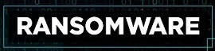
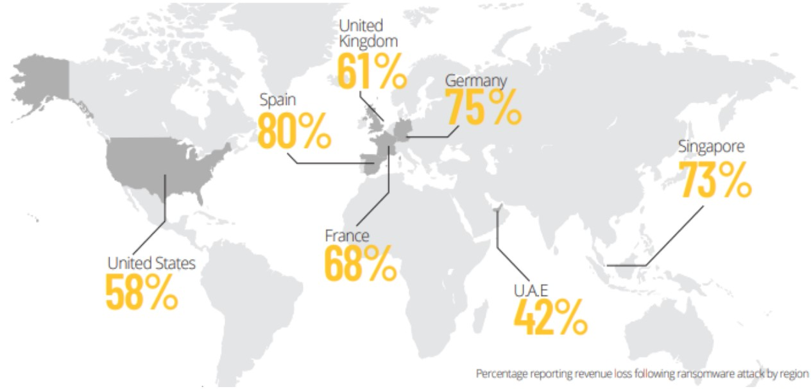
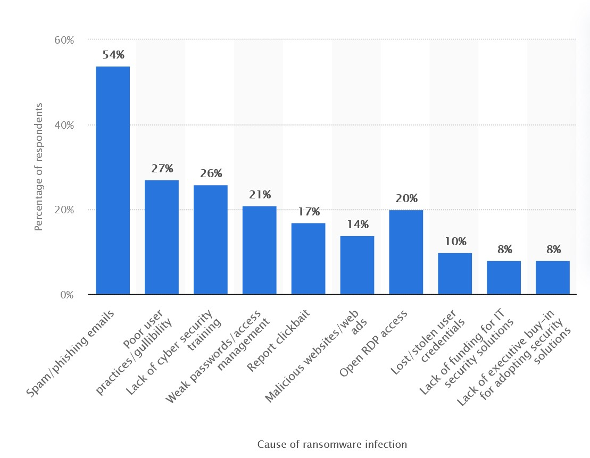
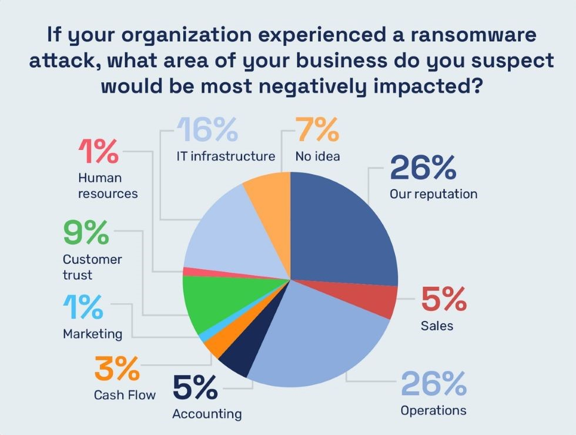
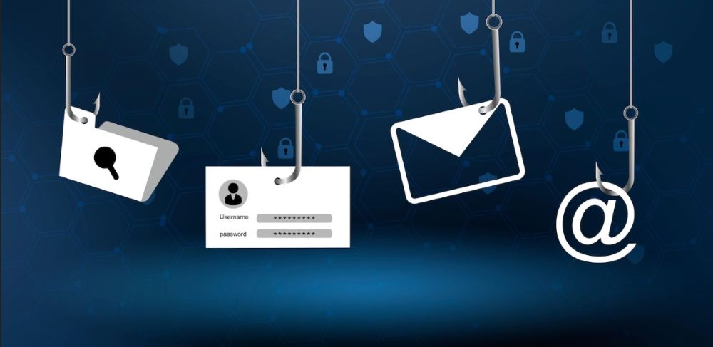
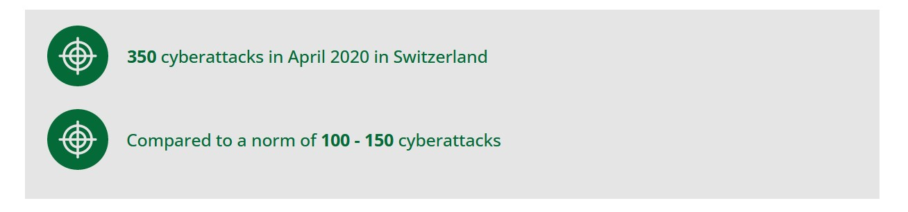
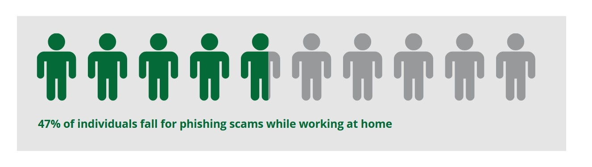
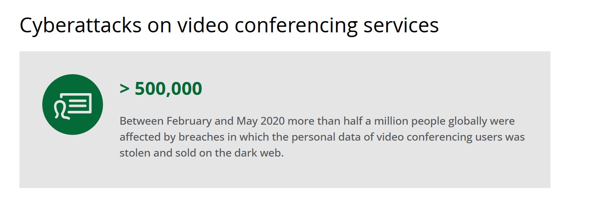
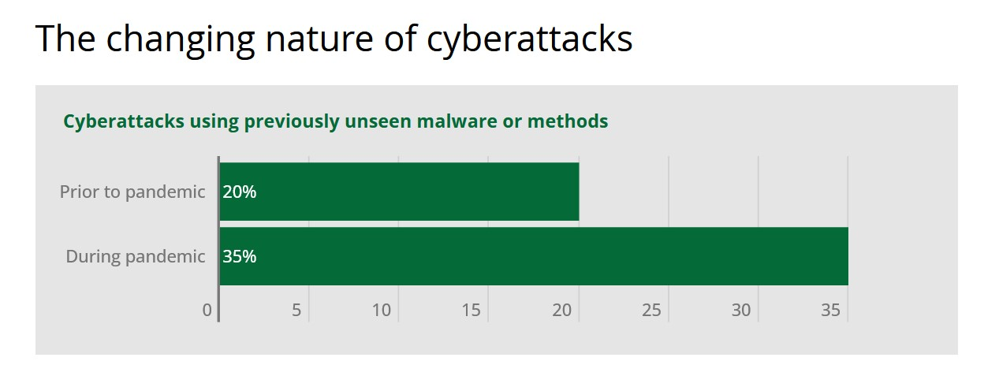

What is ransomware?
Ransomware is a malicious software that infects the targeted computers by encrypting all the data within the system, preventing the users from accessing files and data. And the hacker will demand the organization or owner to pay a ransom in exchange for releasing their data. Attackers demand the victims for the payment to be done in cryptocurrency because this form of payment provides anonymity for the destination address associated with the ransom demand. Unlike bank accounts, no personal identifiable information is needed to obtain a crypto wallet.

There are four main types:
Scareware Ransomware
They are general pop-ups or ads that appear with a message that malware got detected, and the user will need to pay the ransom to stop its action. Unless the victim pays the ransom, the pop-ups will keep coming, and only when the victim clears the entire system or re-install the operating system. This type of pop-up programs often come with illegitimate software or pirated software.
Screen Locker Ransomware
Lock access to the system of a computer entirely. The users have no access to their computer or their files at all unless they pay the ransom. The attacker uses social engineering techniques to plant the ransomware into the system. After that it locks all the possible ways to access it.
Crypto/Encryption Ransomware
This type of ransomware is more widespread compared to locker ransomware. Unlike the locker ransomware this type of ransomware encrypts all files. And it will ask for a ransom in exchange for the decryption key. They would normally spread through suspicious links, malicious emails, illegitimate websites, and downloads.
Double Extortion Ransomware
This is a that leverages a specialized technique to extracts a considerable amount of confidential data from the target system and it the delivers it to the attacker, then encrypts it all and asks for the ransom. Here not only the files are encrypted but the attacker also threatens to publish or release the private files if the victim does not pay the ransom. So, if the victim fails to pay the ransom, then the attacker will either destroy those files or he will release them all to the dark web or sell them to the highest bidder.
The most common type of ransomware used by attackers for companies is the Screen locker because it risks disrupting business operations and even causing interruptions in important communications.
Main ways for businesses to get infected by ransomware

- Phishing emails
Phishing emails are spam mails sent by fraudsters who want to try to get hold of your personal details, finances, and your identity with having an intent to steal from you. So, let us say you get an (fake) email from a bank telling to click a link to avoid a transaction. They will create an urgency and the user then clicks the link to save money. But ends up losing money because the link was a malware and now on his system.
- Poor user practices
Poor user practices are like surfing the web and visiting unauthorized websites. Using unofficial apps on the phones and downloading any unknown image from the internet. All these can contain malware, and these are poor practices that a user can avoid.
- Lack of Cybersecurity training
The point being made here is that we all learn languages like C, C++, Java, Python but no one is teaching us basic security standards that are needed to be followed in any organization. Just teaching people about simple things can save companies and organizations millions of monies.
- Weak Passwords
The thing about weak passwords is that hackers nowadays have a logbook type of thing. Which contains all the common passwords that people use. And using brute force a computer can guess a user’s password. Using a complex password hence is necessary. Although using a simple password will save you from a human mind, it cannot save you from a high performing machine which has millions of common passwords saved in its dictionary.
- Report clickbait
The classic clickbait is where we are forwarded some memes or viral news headlines or topics through social media. This clickbait exists even within unofficial websites and apps that a user may use in their smartphones. Best way to avoid them is to not trust any link that does not direct you to official websites or apps like Facebook, YouTube, Instagram etc. But since we cannot even differentiate between these links whether they are official or not, it is better to avoid them.
- Open RDP access
Remote desktop protocol (RDP) is a secure network communication protocol which was developed by Microsoft. It makes it possible for network administrators to remotely diagnose and solve problems that individual users encounter. Also, allows users to remotely access their work desktop.Many fraud calls use this method to take remote access to your system.
- Lost stolen credential
We never know where we have used our password on which PC, we may have used it. Best practice is to input your password only on trusted systems like your workplace and your own PC. But if the user is not sure about where they may have used their password, there is a possibility that the password is stolen. Best step here to take next would be to change the password more often.
- Lack of funding for IT solutions
The problem here is now that antivirus and system server management come at a cost. Most companies may decide to not purchase the antivirus or may decide not to hire employees to actively manage their servers. These then put them at a high risk. A little investment can save them their organization.
- Lack of buying security solutions
Just like the above point the company needs to invest money into security. Both in security software's and in IT people who will manage their servers.

What can businesses do to prevent ransomware attacks?
- Maintain backup
The MS-ISAC recommends backing up important data as the most effective way to recover from a ransomware infection. There are some things to consider, however, backup files should be protected and stored offline or out-of-band, so the user cannot be targeted by attackers.
- Develop plans and policies
In case of emergency response plan, the IT security team must know what steps to take in order to tackle a ransomware attack. The steps should be smooth and well defined, and the communication needs to be clear and well planned ahead of any emergency.
- Review Port Settings
Many ransomware variants take advantage of Remote Desktop Protocol (RDP) port 3389 and Server Message Block (SMB) port 445. So, you should consider whether your organization needs to leave these ports open also you should consider limiting connections to only trusted hosts.
- Harden the endpoints
Ensure your systems are configured, making sure you have security in mind. Secure configuration settings can help limit your organisation’s number of threats and close security gaps left over from default configurations.
- Keeping the system up to date
One must keep their software's UpToDate. Applying security updates which will avoid security gaps for any attackers to exploit. Where possible, turn on auto-updates so you will automatically have the latest security patches.
- Train the employees
Educating your employees about the best practices. Security awareness training is key to stopping ransomware attacks. All employees should be able to spot and avoid malicious emails, as everyone plays a part in protecting the organisation.
- Implement an IDS
An Intrusion Detection System (IDS) looks for malicious activities and it compares network traffic logs to detect any malicious activity. A robust IDS will update signatures often and alert your organisation as quick as possible if it detects any potential malicious activity.
How does ransomware get into a system?

These programs enter your computer using an external storage media or the internet. The number of downloads that happen every minute are quite high, and we do not know how many of them are malware. An AntiVirus is another program (typically used on Windows) to check the privileges that a specific script demands and flag a message if any suspicious permission is asked for.
Consider an example of a text editor. It will not need access to the internet in normal course. This must be suspicious. If the AntiVirus is programmed in a manner to flag a message on this, it will. Some privileges are always suspicious, such as permission to create and delete files. Anything other than a file manager should not need this access.
Like any other malware (a piece of software with bad intentions):
USB drives
Phishing
Hidden in other legitimate software (backdoors)
Hacking into the system and encrypting the information and so on.
Ransomware is a software program that does not permit the victim to use their data. The means that the ransomware uses are:
Moving the data to another system
Encrypting the data (Mainly)
Hiding the data
How can you prevent your computer to get infected?
Patch your computer regularly (Windows updates, third party software updates, etc, etc)
Update your antivirus database
Use a personal security system
To keep yourself safe, there are some practices to help. Though it does not guarantee 100% security from viruses, it does reduce the chances of your computer getting infected.
Use Linux Distributions which suit your needs. The number of people using Linux is significantly less and the kernel is transparent. That reduces the chances of your computer getting attacked.
If you must use Windows, make sure to have an active security system. Also, keep Windows Defender active. Keep your OS updated to make sure that the latest security modules are installed.
Be careful when on the Internet. Most of the hacks happen online.
Impacts of Covid 19



Now let us try to understand what it means when non tech people go online for their work. The people will now have to deal with unknown links to attend online meets. How do they know whether the link is legitimate or not? How do we train these people to differentiate between a phishing link and a real one? Hackers and fraudsters have taken a huge advantage of covid as there was a sudden jump in online activity. A lot of people who were not exposed to the internet now must deal with it, without knowing security risks.

Case Study
There is this one case study that I have come across. A particularly insidious type of malware is ransomware, which is secretly installed on your windows systems and locks the system down. Although the ransom could be just paid, it is not guaranteed that things will work out. As for the example about a Hospital in Massachusetts, when they had to face a second ransom demand from the attackers after locking down their files.
Who was the Victim: Hospital with 680 networked windows 380 in a central office, with another 300 in a satellite office. The network administrators had no idea what was going on in the network, no security tool, no forensic tool, and the perimeter had no IPS/IDS system in place. Upon arrival of the incident response team, we identified that the client had no protection in place. (As described by
Ransomware Case Studies & Forensics Analysis | CyberSecOp Consulting)
All the organisation's endpoint systems are Windows 7, and Windows 10. Employees operated using Windows email systems which operated on Office 365 and MS Outlook. The infection was initiated with a phishing email, which was identified by The CyberSecOp team.
The Malware
The ransomware was identified as RYUK, which was a new variant that resisted efforts by SpyHunter which is a utility program. RYUK has a habit of deleting key files in its wake to prevent attempts to stop it. The client also checked the registry settings as described by Malwarebytes, hoping to isolate the exact nature of the threat, but had no luck. The company decided to restart the software and see how things would go. As the server was down, they had to write down new orders on slips of paper, which caused a lot of chaos.
Each infected folder contained three files: #Decrypt ReadMe file, .txt. The RYUK ransomware encrypted the targeted files on the extension list, giving it a RYUK extension and a random filename.
The malware infected all PCs at the central office and all the systems at satellite offices; The damage to these infected PCs was okay since they could be reimaged. The health information which was hosted on 26 servers and database was a huge problem, since the backups were failing as the clients found out, the log files, config files, and polices files were all encrypted.
What was the demand?
The demand was mentioned in a #Decrypt Read Me file. There was a message asking for 150 Bitcoins (about $1,734,000) to recover the systems, and the details of how to pay the ransom were also mentioned. The firm's Managing Director decided that they have no other solution but to pay the ransom.
Due to most files being corrupted the CyberSecOp tried to recover them from the physical servers but was not able to. The team proceed with forensic and ransomware negotiation and was able to get the threat actor down to 3.9793 bitcoin.
Ransomware Payment
All communication with the client is covered by with attorney - client privilege
Before the ransomware negotiating, we request proof of life
Understand that ransomware negotiation is a big deal to your business
Negotiation and collaborate with your client like any other business deal
Try to quickly understand the attacker, then start the ransom negotiation
Our ransomware negotiation experts understand classic rules of hostage negotiation
Remediation
Forensics data gathering
Deploy CyberSecOp MDR
Pay the threat actor 3.9793 bitcoin
Received decryption tool from the threat actor
Complete malware analyst on the decryption tool
Decrypting the systems by working with the client technical team
Here are websites which can help you
24x7 Ransomware Response Services
Ransomware Prevention Kit